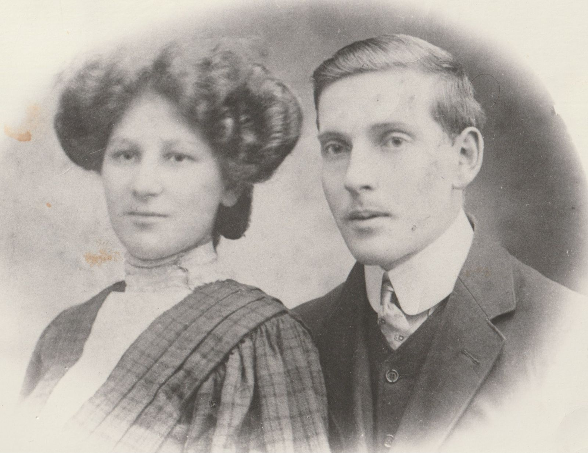
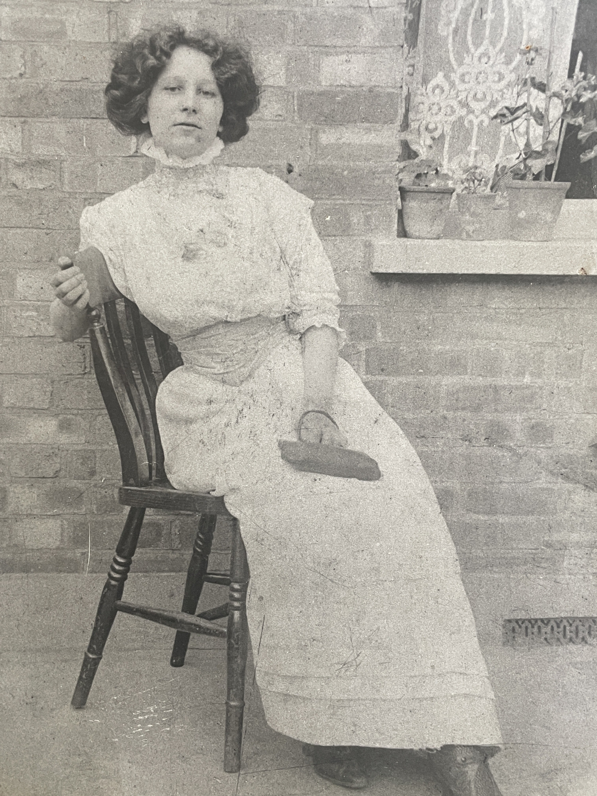
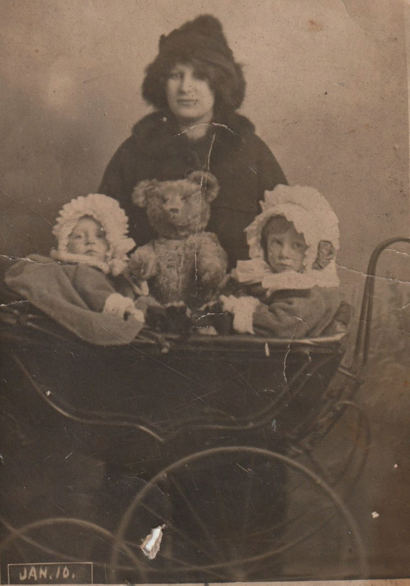
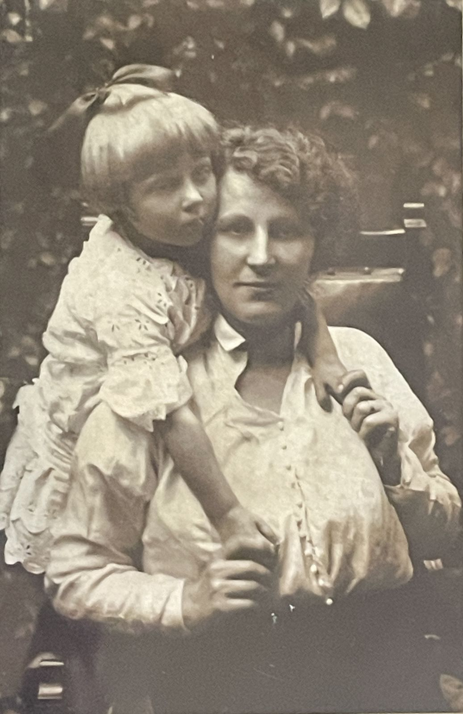
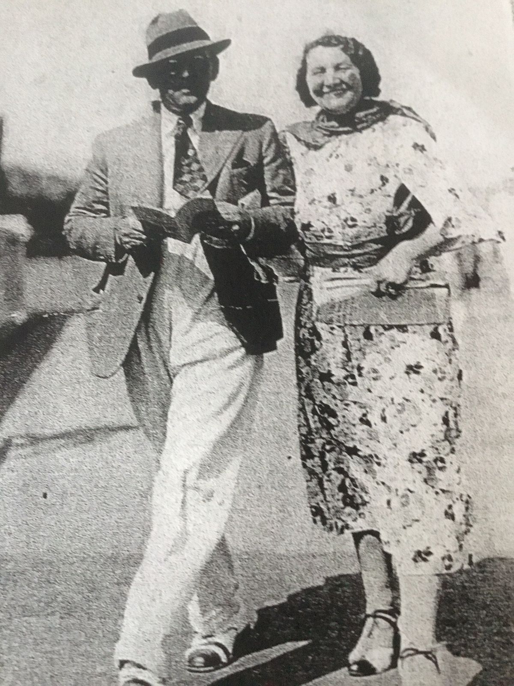
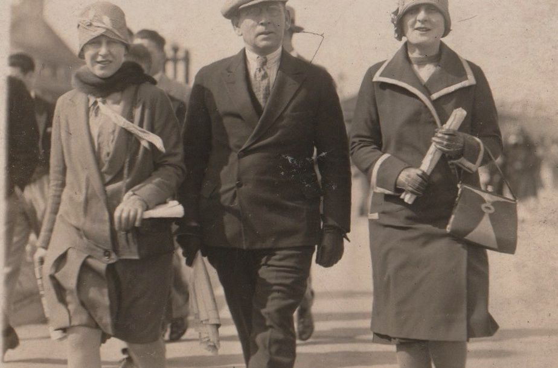
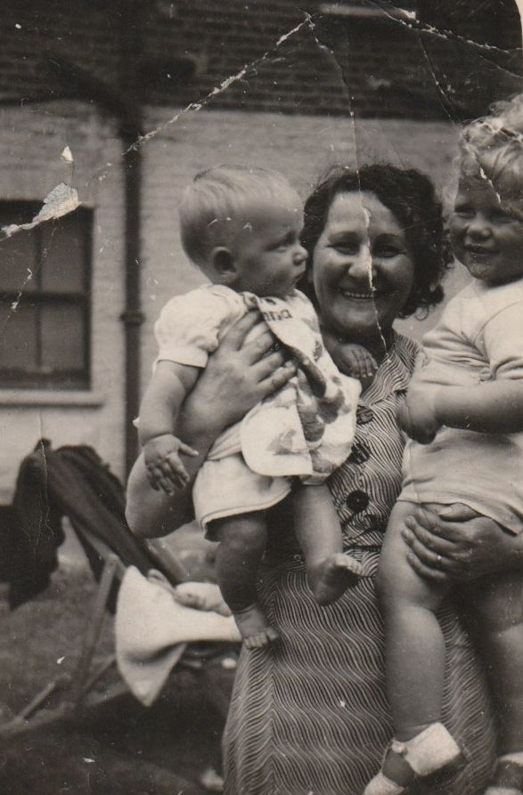
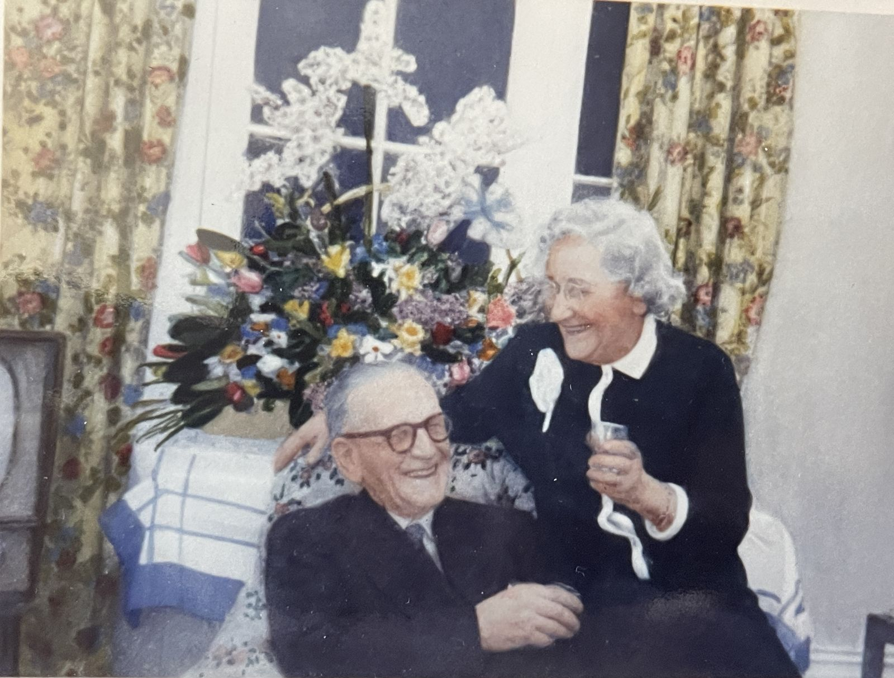
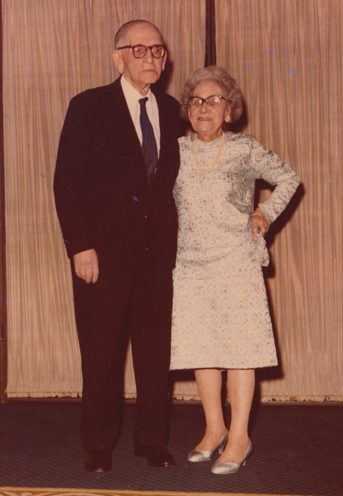

Sam and Dora, together after courting at a distance for years
Likely from around the time Sam gave up on Montreal for good. He'd spent nearly a decade there from 1901, cycling through jobs that didn't last, once earning about a dollar for four days' work — turned away on arrival for being a Jew, he'd told the hiring office he was an Austrian Christian instead, and they'd believed him. The Panic of 1907 wiped out what little he'd built, and it was Dora who sent him the money — three pounds toward his return ticket — that got him back across the Atlantic in 1908, to London, where her family lived and where a marriage contract between them had already been signed that same year. They married in February 1911.

Dora, in England, courting Sam by letter
Dora was born in Korsovka in 1889 and emigrated to England around 1903–04, aged about 14. This undated portrait likely shows her in England, in the years after that move but before her 1911 marriage to Sam — while the two of them, first cousins already committed to each other, courted almost entirely by letter across the Atlantic, as Sam tried to make his way in Montreal.

Sam and Dora, now parents of two young daughters
Two of Sam and Dora's daughters as babies, pictured with their mother and a beloved teddy bear. The photograph's own inscription reads "Jan. 10" and names the children as Gladys and Beatrice, dated 1913 — though Beatrice's birth is recorded elsewhere as around 1915, a small discrepancy in the family record this project hasn't resolved. Whichever two of the three they are, their arrival bracketed Sam's establishment of his own fur business in 1916, the venture that would make the family genuinely prosperous over the following decade.

Dora, with one of her young daughters
One of Sam and Dora's three daughters — Gladys, Beatrice, or Cynthia — as a toddler with her mother; this photograph doesn't identify which. Motherhood filled these years for Dora, in the decade or so before Sam's fur business, launched in 1916, made the family genuinely prosperous.

c.1930s
Sam and Dora, at the height of the fur trade
By the 1930s, Sam's fur business had made the family genuinely prosperous — buying pelts by the thousand on regular trips to Paris, Berlin, and Leipzig — and summers meant weeks at the English coast for Dora and the girls while Sam stayed in London for work. This undated seaside photograph, whose clothing style suggests the 1930s, fits squarely into that pattern, even though this particular outing isn't otherwise recorded in the letters.

c.1930s
Sam, with Gladys and Beatrice, at the seaside
Sam walking the promenade at Margate with two of his daughters, Gladys and Beatrice, dressed in the fashion of the day. Gladys married in October 1934, so this — judging by the clothes, likely the late 1920s or early 1930s — probably predates that; it falls in roughly the same years as the seaside photograph above, when the fur trade's prosperity meant regular coastal holidays for the family.

c.1943
Dora, now a grandmother, with two of Gladys's children
Barbara and Robin — children of Sam and Dora's daughter Gladys and her husband Abraham — in their grandmother's arms. Barbara's own recorded birth (1943) and her evident age here, still a baby, date the photograph to around that year; Robin, recorded as born in 1936, looks younger here than that would suggest, a small discrepancy in the family record this project hasn't resolved. It was Robin who would grow up to keep this whole correspondence safe, decades later passing it to Paul's brother Richard.

1950s
Sam and Dora, 1950s
After struggling for the better part of a decade to build a life in Montreal, Sam found real success back in London — a fur business launched in 1916 that made the family genuinely prosperous, and a home address that climbed steadily through Hackney and Stoke Newington over the following decades. By this photograph, Sam and Dora were well into the settled, comfortable life that hard-won foothold had built.

1971
Sam and Dora, whose letters would outlive them
By 1971 — their sixtieth, "diamond" wedding anniversary — Sam and Dora were decades into the marriage that the 1908 tenaim and the decade of letters before it had been building toward. The correspondence itself would outlive them both: kept by their daughter Gladys's son Robin, passed to Paul's brother Richard in the 1990s, and inherited by Paul after Richard's death in 1999, which is how this project came to exist at all.

1971
Sam and Dora, sixty years married
A formal portrait from the same 1971 gathering — their diamond wedding anniversary, sixty years after they married in February 1911. The decade in Montreal, the Panic of 1907, the fur business built from nothing in 1916: all of it lies behind them here.